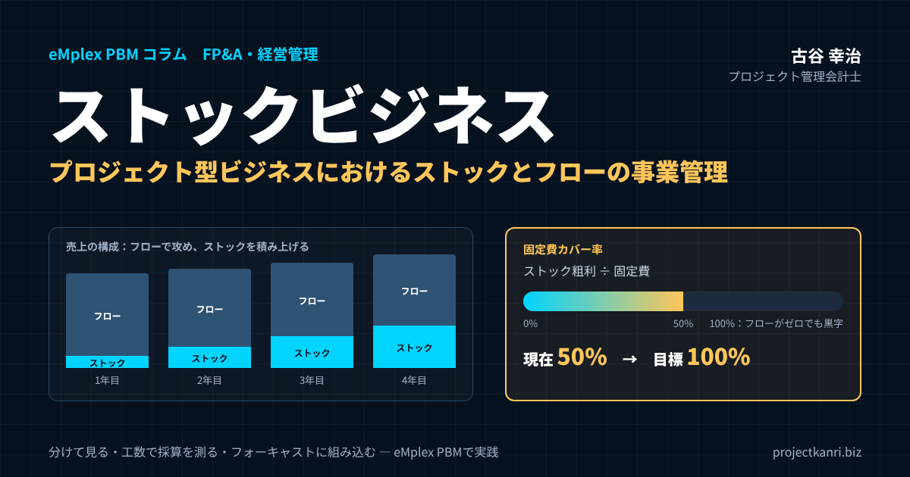

ストックビジネスとは？プロジェクト型ビジネスにおけるストックとフローの事業管理と、eMplex PBMでの実践

結論：プロジェクト型ビジネスこそ「ストックビジネス」を分けて育て、数字で管理すべき
プロジェクト管理会計研究所の古谷です。最初に結論を申し上げます。システム開発、建設、コンサルティング、広告・PR、映像制作といったプロジェクト型ビジネスは、本質的にはフロービジネス、つまり一件ごとに受注して完了したら終わる商売です。だからこそ、保守、運用、顧問、リテナー、サブスクリプションといったストックビジネスの部分を、フローとは分けて把握し、意図して育て、別の物差しで管理することが、経営の安定と成長の鍵になります。
この記事の要点：ストックビジネスとフロービジネス
- ストックビジネスとは：保守・運用・顧問・リテナー・月額サービスなど、継続的な契約で収益が積み上がる事業
- フローとの違い：ストックは期首に売上の多くが見え安定、フローは一件が大きく成長の原動力だが波が大きい
- 管理の基本：案件種別でストックとフローを分け、売上・原価・粗利・工数を区分ごとに集計
- KPI：ストックはMRR・解約率・更新率・LTV・固定費カバー率、フローは受注残・パイプライン・受注率・案件粗利・稼働率
- eMplex PBMでの実践：種別テンプレート、タイムシートで隠れ工数を可視化、フォーキャストで種別ごとの着地見込みを月次更新
プロジェクト型ビジネスの経営者の方から、よく伺う悩みがあります。「毎年、期首には売上がゼロからのスタートで、営業が受注を積み上げないと会社が回らない」「大型案件が終わった翌期に、売上がガクンと落ちる」「人を増やしたいが、来期の売上が読めないので採用に踏み切れない」。いずれも、売上の大半がフローで、ストックの土台が薄いことから生じる悩みです。
一方で、同じプロジェクト型ビジネスでも、期首の時点で売上の3割、4割がすでに見えている会社があります。保守や運用の契約、顧問契約、月額のサービスなど、毎月決まって入ってくる売上の土台を持っている会社です。こうした会社は、固定費の多くをストックの粗利で賄えるため、フローの受注が一時的に落ち込んでも経営が揺らぎにくく、採用や投資の判断も前向きに行えます。
私自身、エンプレックス（現SCSK）でCFOを務めていた頃、受託開発のフローの売上と、ソフトウェアの保守やライセンスのストックの売上を、どう組み合わせて会社の収益の土台をつくるかに、常に頭を悩ませていました。フローは大きく伸ばせるが波が大きい。ストックは伸びるのに時間がかかるが、積み上がれば会社を支える。この二つの性格の違いを理解し、それぞれに合った管理をすることの大切さを、身をもって学びました。
本稿では、ストックビジネスとは何か、フロービジネスとの違いから始め、プロジェクト型ビジネスにおけるストックとフローの具体例、メリットとデメリット、なぜプロジェクト型ビジネスがフローに偏りやすいのかを整理します。そのうえで、ストックとフローを分けて管理する事業管理の基本設計、それぞれのKPI、フローをストックに変える設計、ストックの採算の落とし穴、フォーキャストへの組み込み方、そしてeMplex PBMの機能での具体的な実践方法までを解説します。最後に、よくいただく質問をFAQにまとめました。
ストックビジネスとは：フロービジネスとの違い
ストックビジネスとは、一度契約を結ぶと、継続的に収益が発生し続ける事業のことです。ストック（stock）は「蓄積」を意味し、顧客との契約が積み上がるほど、毎月、毎年の収益が積み上がっていきます。リカーリングビジネス、継続課金型のビジネスとも呼ばれます。代表的な例は、ソフトウェアの保守契約や月額のSaaS、ビルや設備の維持管理契約、賃貸物件の管理、顧問契約、通信や電力の契約などです。
これに対してフロービジネスとは、取引のたびに収益が発生し、取引が終われば収益も終わる事業のことです。フロー（flow）は「流れ」を意味します。受託開発の一括請負、建設工事、スポットのコンサルティング、物品の販売、イベントの企画運営などが典型です。フロービジネスでは、売上を維持するために、常に新しい案件を受注し続ける必要があります。
| 項目 | ストックビジネス | フロービジネス |
|---|---|---|
| 収益の発生 | 契約期間中、継続的に発生（月額・年額） | 取引ごとに発生し、完了で終わる |
| 期首の売上の見え方 | 大部分が契約で見えている | 受注残を除きほぼゼロから |
| 一件あたりの売上 | 小さい（月額）が長期で大きくなる | 大きい |
| 成長の速さ | ゆっくり積み上がる | 受注次第で一気に伸びる |
| 主なリスク | 解約、立ち上がりの遅さ、隠れ工数 | 受注の波、大型案件終了後の落ち込み |
| 代表例 | 保守、運用、SaaS、維持管理、顧問、リテナー | 受託開発、工事、スポットコンサル、イベント |
両者の違いを、最も分かりやすく表すのが、期首の時点での売上の見え方です。ストックビジネスでは、期首の時点で、今期の売上の大部分がすでに契約によって見えています。解約がなければ、昨年と同じ売上が今年も入ってくるからです。フロービジネスでは、受注残を除けば、期首の売上の見通しはほぼゼロからのスタートです。営業が受注を積み上げて初めて、売上が見えてきます。
収益の大きさの性格も異なります。フロービジネスは、一件あたりの売上が大きく、大型の案件を受注すれば、短期間で大きな売上と利益を得られます。ストックビジネスは、一件あたりの月額は小さくても、長い期間にわたって積み上がることで、大きな収益になります。月額50万円の保守契約でも、5年続けば3,000万円です。
ここで強調しておきたいのは、ストックとフローは、どちらが優れているというものではないということです。フローは成長の原動力であり、新しい顧客との関係の入口です。ストックは経営の安定の土台であり、顧客との関係を長く深める手段です。大切なのは、自社の売上の中で、両者がどのような割合で、どのような関係にあるのかを把握し、意図して設計することです。
ストックとフローの区別は、会計の上での決まりではありません。どちらも同じ売上として計上されます。だからこそ、管理会計の仕組みの中で、意図して区別しなければ、決算書を見ても両者の違いは分かりません。ストックとフローの区別は、経営者が自社の収益の構造を理解し、将来を設計するための、管理会計ならではの視点なのです。
プロジェクト型ビジネスにおけるストックとフローの具体例
プロジェクト型ビジネスというと、フローの商売というイメージが強いかもしれません。しかし、実際には多くの業種で、フローの案件に付随して、あるいは独立して、ストックの収益が生まれています。業種ごとの典型的な例を整理してみましょう。
| 業種 | フロー | ストック |
|---|---|---|
| システム開発・ITサービス | 受託開発（一括請負） | 保守契約、運用サービス、自社SaaSの月額利用料 |
| 建設業 | 新築・改修工事 | 維持管理、定期点検、修繕の年間契約 |
| 不動産業 | 開発・分譲 | 賃貸管理、建物管理の受託 |
| コンサルティング | プロジェクト型コンサル、研修 | 顧問契約、伴走支援 |
| 広告・PR | スポットのキャンペーン、イベント | 月額リテナー契約 |
| 映像制作 | 単発の作品制作 | 年間制作契約、配信運用代行 |
システム開発やITサービスの業種では、受託開発の一括請負がフロー、開発したシステムの保守契約や運用サービス、自社のSaaSの月額利用料がストックです。開発の案件を受注すると、その後に保守や運用の契約が続くことが多く、フローがストックを生む典型的な構造になっています。
建設業では、新築や改修の工事がフロー、建物や設備の維持管理、定期点検、修繕の年間契約がストックです。不動産業では、開発や分譲がフロー、賃貸の管理や建物の管理受託がストックになります。工事を完成させて引き渡した後に、その建物の維持管理を受託できれば、フローがストックに転換します。
コンサルティング業では、プロジェクト単位のコンサルティングや研修の実施がフロー、顧問契約や継続的な伴走支援がストックです。広告・PRの業種では、スポットのキャンペーンやイベントがフロー、月額のリテナー契約がストックです。以前のコラムで、PR会社のリテナーとスポットの管理を取り上げましたが、その構造はまさにストックとフローの組み合わせです。映像制作では、単発の作品の制作がフロー、年間の制作契約や配信の運用代行がストックにあたります。
こうして見ると、プロジェクト型ビジネスにも、ストックの種は数多くあることが分かります。問題は、その種を意図して育てているかどうか、そして、ストックの売上と利益を、フローと区別して把握しているかどうかです。私が支援先でこの点を尋ねると、「保守の売上は、開発の売上と一緒に計上しているので分からない」という答えが返ってくることが少なくありません。
ストックビジネスのメリット・デメリット（フロービジネスとの比較）
ストックビジネスのメリットとデメリットを、フロービジネスと比べながら整理しておきます。
| 区分 | メリット | デメリット |
|---|---|---|
| ストックビジネス | 収益の安定と予測可能性、計画的な投資、顧客との関係の深化、追加受注の機会 | 立ち上がりに時間、初期投資の回収が長い、解約リスク、隠れ工数で採算が見えにくい |
| フロービジネス | 一件の売上・利益が大きい、成長が速い、新規顧客獲得の入口 | 収益が不安定、常に営業力が必要、稼働の波 |
ストックビジネスの最大のメリットは、収益の安定性と予測可能性です。契約が積み上がるほど、毎月の売上の土台が厚くなり、来期の売上も高い精度で見通せます。売上が見えていれば、採用や設備への投資を計画的に行えますし、金融機関や投資家からの評価も高まります。また、同じ顧客と長く付き合うことで、顧客の業務への理解が深まり、追加の提案、つまり新しいフローの案件を受注する機会も増えます。
一方、ストックビジネスにはデメリットもあります。第一に、立ち上がりに時間がかかることです。月額の小さな契約を積み上げていくため、大きな収益になるまでには何年もかかります。第二に、初期の投資の回収に時間がかかることです。SaaSのように、提供の仕組みを先に作る必要がある事業では、黒字化までの期間が長くなります。第三に、解約のリスクです。積み上げた契約も、顧客の満足度が下がれば解約され、土台が崩れます。第四に、収益性が見えにくくなりやすいことです。保守や運用の契約は、毎月の売上が一定でも、実際にかかる工数は月によって大きく変動します。工数を把握していないと、知らないうちに赤字の契約を抱えていることがあります。
フロービジネスのメリットは、一件あたりの売上と利益が大きく、短期間で大きな成果を上げられることです。成長の速度も速く、受注を増やせば売上は一気に伸びます。デメリットは、収益の不安定さです。大型案件の終了や、景気の変動による受注の減少が、そのまま売上の落ち込みにつながります。常に営業の力が求められ、人員の稼働にも波が生じやすくなります。
プロジェクト型ビジネスの経営者にとって大切なのは、両者のメリットを組み合わせることです。フローで新しい顧客を獲得し、その関係をストックにつなげて土台を厚くする。ストックで固定費を賄い、フローの利益を成長への投資に回す。この好循環を設計することが、事業管理の要になります。
ストックの比率が高いことは、会社の価値の評価にも影響します。事業の承継やM&A、上場の場面では、将来の収益の見通しが立ちやすいストックの売上は、フローの売上よりも高く評価される傾向があります。同じ売上、同じ利益の会社でも、ストックの比率が高い会社のほうが、会社としての価値は高く見積もられやすいのです。ストックを育てることは、日々の経営の安定だけでなく、会社の価値そのものを高める取り組みでもあります。
なぜプロジェクト型ビジネスはフローに偏りやすいのか
多くのプロジェクト型ビジネスが、売上の大半をフローに頼っています。その理由を考えてみると、いくつかの構造的な要因が見えてきます。
一つ目は、評価の仕組みです。営業担当者の目標が受注額で設定されていると、一件で大きな金額になるフローの案件が優先され、月額の小さなストックの契約は後回しにされがちです。保守の契約を取っても、受注額としては小さく見えるため、評価にもつながりにくい。結果として、ストックの種は、営業の関心の外に置かれてしまいます。
二つ目は、保守や運用を「おまけ」として扱う慣行です。開発や工事の案件を受注するために、保守を無償や低価格で付けてしまう。あるいは、保守の契約を結ばないまま、問い合わせや不具合の対応を「サービス」として続けてしまう。こうした慣行は、本来ストックとして収益を生むはずの仕事を、コストに変えてしまいます。
三つ目は、人月の考え方です。前回のコラムで人月モデルの終わりを取り上げましたが、人の時間を売る発想が強い会社では、「人が働いた分だけ売上になる」と考えるため、継続的な価値提供に対して対価を受け取るという発想が育ちにくい傾向があります。
四つ目は、管理の仕組みです。ストックとフローを区別せずに売上を計上し、管理していると、ストックの売上がどれだけあり、どれだけの利益を生んでいるのかが見えません。見えないものは、育てようがありません。経営者がストックの重要性を頭では理解していても、数字で把握できていないために、具体的な打ち手につながらないのです。
五つ目として、フローの案件のほうが「仕事をしている実感」を得やすいことも挙げられます。新しいシステムを作る、新しい建物を建てる、新しいプロジェクトを立ち上げる。フローの仕事には、目に見える成果と達成感があります。一方、保守や運用の仕事は、何も起きないことが成果であり、評価されにくい。こうした心理的な要因も、フローへの偏りを生んでいます。保守や運用の担当者が、トラブルを未然に防いだことで顧客の事業を守っているという事実を、会社としてきちんと言葉にし、評価することが大切です。
この四つ目の要因こそ、プロジェクト管理会計で解決できる部分です。ストックとフローを分けて管理する仕組みを持てば、ストックの現状が数字で見え、育てるための目標と打ち手を具体的に決められるようになります。次の章から、その方法を見ていきましょう。
ストックとフローを分けて管理する：事業管理の基本設計
ストックとフローを分けて管理するための、基本的な設計をご紹介します。ポイントは、案件の登録の段階で「ストックかフローか」の区分を付け、売上、原価、粗利、工数を、その区分ごとに集計できるようにすることです。
第一に、案件の種別を定義します。たとえば、「フロー：受託開発（請負）」「フロー：スポットのコンサルティング」「ストック：保守契約」「ストック：運用サービス」「ストック：顧問契約」「ストック：月額サービス」といった具合です。種別ごとに、売上の計上の方法、原価の範囲、予算の立て方を決めておきます。
第二に、ストックの契約は、契約の単位で案件として登録します。保守契約であれば、契約期間を一つのプロジェクトとし、月額の売上と、毎月の工数や外注費を記録します。契約を更新したら、新しい期間のプロジェクトとして登録し直すか、同じプロジェクトの期間を延ばします。フローの開発案件と、その後の保守契約は、別の案件として分けて管理することが大切です。両者を一つの案件にまとめてしまうと、開発の採算も保守の採算も見えなくなります。
第三に、ストックとフローの粗利を、会社の固定費と比べて見ることです。私が特に重視している指標が、「固定費カバー率」です。ストックの粗利で、会社の固定費（販売費及び一般管理費）のどれだけを賄えているかを示す指標で、ストックの粗利÷固定費で計算します。
| 区分 | 売上 | 粗利率 | 粗利 |
|---|---|---|---|
| ストック（保守・運用・顧問） | 300 | 45% | 135 |
| フロー（受託開発・スポット） | 700 | 30% | 210 |
| 合計 | 1,000 | 34.5% | 345 |
| 固定費（販管費） | ― | ― | 270 |
| 営業利益 | ― | ― | 75 |
| 固定費カバー率（ストック粗利÷固定費） | ― | ― | 50% |
※説明用のモデル数値。
表の例では、年商10億円の会社で、ストックの売上が3億円、粗利が1億3,500万円、固定費が2億7,000万円です。固定費カバー率は50％です。つまり、フローの受注がゼロになっても、固定費の半分はストックの粗利で賄える状態です。この比率が100％を超えれば、フローの受注がなくても会社は赤字にならない、つまりフローの粗利はすべて利益と成長への投資に回せる状態になります。
固定費カバー率は、経営の安定度を一つの数字で表す、とても分かりやすい指標です。私は支援先で、この比率を中期の経営目標に据えることをお勧めしています。たとえば「3年後に固定費カバー率を80％にする」と決めれば、そのために必要なストックの粗利の増加額が逆算でき、保守や運用の契約をどれだけ増やすべきか、既存の契約の採算をどれだけ改善すべきかが、具体的な数字で見えてきます。
第四に、ストックとフローの関係を追いかけることです。フローの案件から、どれだけのストックの契約が生まれたのか。開発の案件を受注した顧客のうち、保守契約につながった割合はどれくらいか。この「ストック化率」を把握しておけば、フローの営業活動が、将来のストックの土台づくりにどれだけ貢献しているのかが分かります。
区分の付け方で迷うのが、ストックとフローの中間的な契約です。たとえば、1年間の準委任の契約で、毎月の稼働に応じて請求するもの。契約の期間中は継続的に売上が立ちますが、契約の終了後に更新される保証はありません。私は、契約に更新の定めがあり、過去にも継続して更新されている契約はストック、期間を区切ったプロジェクトとして完了が予定されている契約はフロー、と区分することをお勧めしています。大切なのは、区分の基準を社内で決め、継続して同じ基準で運用することです。
ストックビジネスのKPI：MRR・ARR、解約率、更新率、LTV、ストック比率
ストックビジネスを育てるには、フローとは異なる物差しが必要です。代表的なKPIを整理しておきます。
| KPI | 計算・意味 | プロジェクト型ビジネスでの見方 |
|---|---|---|
| MRR／ARR | 毎月の経常収益／その12倍 | 新規・増額・減額・解約に分解して推移を見る |
| 解約率／更新率 | 解約された契約の割合／更新時期の契約のうち更新された割合 | 年単位の保守・顧問は更新率で見ると分かりやすい |
| LTV | 1契約が全期間で生む粗利（例：月額50万×粗利率45%×60か月＝1,350万円） | 獲得コスト（CAC）と比べて営業投資の上限を判断 |
| ストック比率 | 売上（または粗利）に占めるストックの割合 | 固定費カバー率と並べて安定度を評価 |
| 固定費カバー率 | ストック粗利÷固定費 | 中期目標に据えて必要なストック粗利を逆算 |
| 契約別粗利率 | （月額売上－労務費・外注費）÷月額売上 | 工数で隠れ工数を可視化し赤字契約を発見 |
MRR（月次経常収益）とARR（年次経常収益）は、ストックビジネスの規模を表す最も基本的な指標です。毎月、継続的に入ってくる売上の合計がMRR、その12倍がARRです。MRRの推移を、新規の契約による増加、既存の契約の増額（アップセル）、減額、解約による減少に分解して見ると、ストックがどのように育っているのかが分かります。
解約率は、ストックビジネスの健康状態を表す指標です。月次の解約率が1％でも、年間では約11％の契約が失われます。積み上げたストックが、穴の開いたバケツのように漏れていては、いくら新規の契約を増やしても土台は厚くなりません。プロジェクト型ビジネスの保守や顧問の契約は、年単位で更新されることが多いため、「更新率」として見るのも分かりやすい方法です。更新の時期を迎えた契約のうち、更新された割合です。
LTV（顧客生涯価値）は、一つの顧客、あるいは一つの契約が、取引の全期間を通じてもたらす粗利の合計です。たとえば、月額50万円、粗利率45％の保守契約が、平均して5年（60か月）続くとすれば、LTVは50万円×45％×60か月＝1,350万円です。この数字と、契約を獲得するためにかかったコスト（CAC）を比べれば、ストックの契約を獲得するための営業活動に、どこまで投資してよいかの判断ができます。
ストック比率は、売上全体に占めるストックの売上の割合です。粗利で見ることもあります。ストック比率と、先ほどの固定費カバー率を並べて見ると、会社の収益構造の安定度が立体的に把握できます。
プロジェクト型ビジネスで、私が特に重視していただきたいのは、ストックの契約ごとの粗利率です。SaaSのような製品型のストックでは、一度作った仕組みを多くの顧客に提供するため、粗利率は高くなります。一方、保守や運用、顧問のように人が対応するストックでは、契約ごとにかかる工数が大きく異なり、粗利率もばらつきます。月額の売上が一定でも、実際の工数が想定を超えていれば、その契約は赤字です。ストックのKPIは、売上の規模だけでなく、契約ごとの採算とセットで見ることが欠かせません。
KPIを見る頻度も決めておきましょう。MRRと解約・更新の状況は毎月、契約ごとの粗利率は毎月または四半期ごと、LTVや固定費カバー率は四半期ごとや半期ごとに確認するのが一つの目安です。数字を見る頻度と場が決まっていれば、ストックの変化に早く気づき、手を打つことができます。
フロービジネスのKPI：受注残、パイプライン、受注率、案件粗利、稼働率
フロービジネスの側も、ストックとは異なる物差しで管理します。主なKPIは次のとおりです。
| KPI | 意味 |
|---|---|
| 受注残 | 受注済みで未計上の売上。月別の計上予定で将来の売上を見通す |
| パイプライン | 商談の金額×確度の掛け目で将来の受注を推計 |
| 受注率 | 提案した商談のうち受注に至った割合 |
| 案件粗利率 | 見積時と完了時の粗利を比較し、見積精度と実行管理を評価 |
| 稼働率 | 人の時間のうち案件に使われた割合。ストックの仕事は平準化に寄与 |
受注残は、受注済みで、まだ売上として計上していない金額です。フロービジネスにとって、受注残は将来の売上の確度の高い部分であり、ストックビジネスにおける契約済みのMRRに近い役割を果たします。受注残を、売上の計上予定の月ごとに並べておけば、今後数か月の売上の見通しが立ちます。
パイプラインは、受注に至っていない商談の一覧です。商談の段階や受注の確度ごとに金額を集計し、確度に応じた掛け目を掛けて、将来の受注の見込みを推計します。受注率、つまり提案した商談のうち受注に至った割合を、過去の実績から把握しておくと、パイプラインからの受注の見込みの精度が上がります。
案件ごとの粗利率は、フロービジネスの収益性を表す最も重要な指標です。受注時の見積の粗利と、完了時の実績の粗利を比べれば、見積の精度と、実行の管理の良し悪しが分かります。赤字の案件を早く見つけるために、着地見込みを月次で更新することも欠かせません。
稼働率は、技術者やコンサルタントの時間のうち、案件に使われた時間の割合です。フローの案件が途切れると稼働率が下がり、人件費が原価にならずに固定費として残ります。ここで、ストックとフローの関係が効いてきます。保守や運用のストックの仕事があれば、フローの案件の端境期にも、人の時間を収益につなげることができます。ストックは、売上の安定だけでなく、稼働の平準化にも役立つのです。
フローのKPIとストックのKPIを、同じ経営会議の資料に並べることで、二つの事業のバランスを一目で確認できるようになります。
フローをストックに変える：保守・運用・顧問化の設計
プロジェクト型ビジネスでストックを育てる最も現実的な方法は、フローの案件をきっかけに、ストックの契約へとつなげることです。私が支援先でお勧めしている転換のパターンをご紹介します。
| パターン | フロー | → ストック | ポイント |
|---|---|---|---|
| ① 保守・維持管理化 | 開発・工事 | 保守契約、維持管理、定期点検 | 提案段階から保守をセットで提案 |
| ② 顧問・伴走化 | プロジェクト型コンサル | 顧問契約、定例の伴走支援 | 成果の定着までを継続支援として設計 |
| ③ 年間契約化 | スポットの制作・PR | 年間契約、リテナー | 価格・優先対応のメリットを提示 |
| ④ サービス化 | 受託で作った仕組み・ノウハウ | 月額サービス（SaaS等） | 複数顧客に提供できる形に作り変える |
第一のパターンは、開発や工事の後の保守・維持管理への転換です。システムを納品した後の保守、建物を引き渡した後の維持管理や定期点検。フローの案件で作ったものを、その後も守り、改善し続ける契約です。ポイントは、フローの案件の提案の段階から、保守の契約をセットで提案することです。納品の直前になって保守の話を持ち出すと、顧客の予算が確保されておらず、契約に至らないことが多いからです。
第二のパターンは、プロジェクト型のコンサルティングから、顧問契約や伴走支援への転換です。プロジェクトで作った仕組みや計画が、実際に現場で定着するまでには時間がかかります。プロジェクトの完了後も、月に一度の定例の会議や、相談への対応を続ける顧問の契約を提案すれば、顧客にとっては成果の定着を、受注者にとってはストックの収益を得られます。
第三のパターンは、スポットの案件から、年間の契約やリテナーへの転換です。広告やPR、映像制作のように、同じ顧客から繰り返し単発の依頼を受けている場合、それらを年間の契約にまとめることで、顧客には価格や対応の優先度のメリットを、受注者には売上の安定をもたらします。
第四のパターンは、提供している仕組みそのものを、月額のサービスとして提供する転換です。受託で作ってきたシステムやツール、ノウハウを、複数の顧客に月額で提供できるサービスに作り変える。これは、受託の会社が自社のサービスを持つ会社へと進化する道でもあります。前回のコラムで取り上げた人月モデルからの脱却とも、深くつながる方向です。
いずれのパターンでも大切なのは、ストックの契約の中身、つまり何を、どこまで、どの水準で提供するのかを明確にすることです。保守の範囲、対応の時間、月あたりの作業の上限、範囲を超えた場合の追加の料金。これらが曖昧なまま契約すると、顧客の要望が際限なく広がり、ストックの契約が赤字の温床になります。
転換を進めるうえで、価格の設計も重要です。ストックの契約の月額は、過去の対応の工数の実績と、提供する価値の両方から決めます。工数の実績だけで価格を決めると、人月の発想に戻ってしまいます。顧客にとって、システムが止まらない安心、建物の価値が保たれる安心、相談できる相手がいる安心にどれだけの価値があるのか。その価値を言葉にして提案することが、ストックの契約の価格を適正な水準にする鍵になります。
ストックの採算の落とし穴：保守の赤字化と「隠れ工数」
ストックビジネスを育てるうえで、プロジェクト型ビジネスが最も陥りやすい落とし穴が、保守や運用の契約の赤字化です。月額の売上は毎月きちんと入ってくるため、経営からは順調に見えます。ところが、実際にかかっている工数を集計してみると、売上を大きく上回っていることがあります。
原因は、いわゆる「隠れ工数」です。保守の契約の範囲外の問い合わせへの対応、ちょっとした改修の依頼、障害の調査、顧客との打ち合わせ。一つひとつは小さな作業でも、記録されないまま積み重なると、契約の採算を大きく圧迫します。特に、フローの開発を担当したエンジニアが、その後の保守の対応も兼務している場合、保守にかけた時間が開発の案件や間接作業に紛れて、保守の契約の原価として集計されないことがよくあります。
これを防ぐには、保守や運用の契約を独立した案件として登録し、その契約に関わる作業の工数を、必ずその案件に記録することです。月ごとに、契約の売上と、工数から計算した労務費、外注費を並べて、粗利を確認します。契約の範囲を超えた作業が多い場合は、範囲の見直しや、追加の料金の請求、更新の際の価格の改定を検討する材料になります。
更新の時期は、ストックの契約の採算を見直す絶好の機会です。過去1年間の工数の実績を示しながら、「当初の想定より作業が増えているため、来年度の月額を見直したい」と提案すれば、顧客にも納得してもらいやすくなります。逆に、工数の実績がなければ、価格の改定の根拠を示せず、赤字の契約をそのまま更新し続けることになります。人件費が上がり続ける時代には、ストックの契約の価格を、根拠をもって見直す力が、ストックの採算を守る生命線です。
もう一つの落とし穴は、解約の兆候を見逃すことです。問い合わせの件数が急に減った、定例の会議が延期されるようになった、顧客の担当者が交代した。こうした変化は、解約の前触れであることがあります。ストックの契約ごとに、売上と工数だけでなく、顧客との接点の記録も残しておくと、兆候に早く気づくことができます。
隠れ工数の問題は、現場の善意から生まれることが多いものです。顧客のために、範囲外の依頼にも快く応じる。その姿勢自体は素晴らしいのですが、記録されなければ、会社はその善意の価値を把握できず、適正な対価を求めることもできません。工数の記録は、現場の努力を会社の数字として正しく残し、報いるための仕組みでもあるのです。
支援先に見るストック化の進め方：3つのケース
ストックとフローを分けて管理し、ストックを育てていく進め方を、私が支援してきた会社の典型的なケースをもとにご紹介します。個別の会社が特定されないよう、内容は一般化しています。
一つ目は、中堅のシステム開発会社のケースです。この会社は、受託開発が売上の9割を占め、保守は開発の顧客へのサービスとして、ほぼ無償で対応していました。まず、保守を独立した案件として登録し、工数を記録するところから始めました。半年ほど記録を続けると、主要な顧客ごとに、月に数十時間の保守の対応が発生していることが分かりました。この実績をもとに、顧客ごとに保守契約を提案し、範囲と月額を明確にしました。2年後には、ストックの売上が全体の2割を超え、固定費カバー率は30％を超える水準になりました。開発の案件の端境期にも、エンジニアの稼働が保守で支えられるようになり、稼働率の波も小さくなりました。
二つ目は、地方の建設会社のケースです。この会社は、公共工事と民間の新築工事が中心で、受注の波に業績が大きく左右されていました。そこで、自社が施工した建物の維持管理と定期点検を、年間の契約として提案することにしました。工事の引き渡しの際に、点検の計画と費用を示した提案書を渡すことを標準の手順にしたところ、引き渡した顧客の一定の割合が、年間の契約に移行しました。点検の際に見つかった不具合の修繕は、新たなフローの工事の受注にもつながりました。ストックがフローを生み、フローがストックを生む循環が回り始めたのです。
三つ目は、経営コンサルティング会社のケースです。この会社は、プロジェクト型のコンサルティングが中心で、プロジェクトが終わると顧客との関係も途切れがちでした。そこで、プロジェクトの最終報告の際に、成果の定着を支援する月額の顧問契約を、必ず提案するようにしました。顧問の契約では、月に一度の定例の会議と、随時の相談への対応を範囲として明確にし、対応の時間の上限も決めました。顧問の契約の中から、次のプロジェクトの相談が生まれることも多く、新規の営業にかける労力も減りました。
三つのケースに共通しているのは、いずれも「記録して見える化する」ことから始めていることです。保守の工数、点検の契約への移行率、顧問からの次の案件の発生。数字で見えたことで、ストックの価値を社内で共有でき、営業の行動も変わっていきました。
ストックビジネスを育てる組織と評価の仕組み
ストックを育てるには、管理の仕組みだけでなく、組織と評価の仕組みも見直す必要があります。先に述べたように、営業の目標が受注額だけで設定されていると、月額の小さなストックの契約は後回しにされがちです。
私がお勧めしているのは、営業の評価に、ストックの視点を加えることです。たとえば、受注額の目標とは別に、新たに獲得したストックの契約のMRRを目標に加える。あるいは、ストックの契約の受注額を、年間の金額や、一定の期間の合計額に換算して評価する。フローの案件の受注の際に、保守や運用の契約をセットで獲得した場合には、評価を加算する。こうした工夫によって、営業がストックの種をまく動機が生まれます。
保守や運用を担当するチームの評価も大切です。ストックの契約は、提供する側の対応の質が、更新率と解約率を左右します。保守のチームを、開発の後始末をする部門ではなく、顧客との長期の関係を守り、会社の収益の土台を支える部門として位置づけ、更新率や顧客の満足度、契約ごとの粗利率で評価する。そうすれば、保守の仕事に誇りと責任感を持ってもらいやすくなります。
経営陣の役割は、ストックとフローの両方の数字を、毎月の経営会議で同じ重みで確認することです。フローの大型案件の受注は目立ちますが、ストックの契約が一件増えたこと、更新率が上がったこと、赤字の保守契約が改善したことも、同じように評価する。経営陣が何に注目するかが、組織の行動を変えていきます。
ストック×フローで作るフォーキャスト（着地見込み）
ストックとフローを分けて管理することの大きな効用の一つが、フォーキャスト、つまり着地見込みの精度が上がることです。ストックとフローでは、将来の売上の確からしさがまったく異なるため、分けて見積もるほうが合理的だからです。
今期の売上の着地見込みは、次の四つの層の積み上げで考えます。第一層は、ストックの契約済みの売上です。現在の契約が解約されずに続けば入ってくる売上で、最も確度が高い部分です。ただし、過去の解約率や更新率の実績を掛けて、解約による減少をあらかじめ見込んでおきます。第二層は、フローの受注残です。受注済みで、今期中に売上として計上される予定の金額です。第三層は、パイプラインからの受注の見込みです。商談の確度に応じた掛け目を掛けて推計します。第四層は、まだ商談になっていない新規の受注の見込みで、過去の実績の傾向から推計します。
| 層 | 内容 | 確度 |
|---|---|---|
| 第1層：ストック契約済み | 現契約の継続分（解約率・更新率で減少を見込む） | 高 |
| 第2層：フロー受注残 | 受注済みで今期計上予定の金額 | 高 |
| 第3層：パイプライン | 商談金額×確度の掛け目 | 中 |
| 第4層：新規見込み | 過去実績の傾向から推計 | 低 |
この四層の構造で見ると、ストックの厚みが、着地見込みの安定に直結していることがよく分かります。ストックの契約済みの売上と受注残の合計が、今期の売上の目標の大部分を占めていれば、営業はパイプラインの確度を上げることに集中できます。逆に、第三層と第四層への依存が大きければ、着地見込みの振れ幅が大きく、経営としてのリスクも高い状態です。
利益の着地見込みも、同じ考え方で作ります。ストックの契約ごとの粗利率は、過去の実績から比較的安定して見込めます。フローの案件は、案件ごとの着地見込みを月次で更新し、赤字の兆候がある案件を早めに把握します。両者を合計し、固定費を差し引いたものが、営業利益の着地見込みです。
私が提唱しているフォーキャスト経営は、予算を立てて終わりにするのではなく、実績と見込みを毎月更新し、期末の着地を経営会議で共有し続ける経営の手法です。ストックとフローを分けて見積もることは、このフォーキャスト経営の精度を高める最も効果的な方法の一つです。中期の計画においても、ストックのMRRの積み上げの計画と、フローの受注の計画を分けて立てることで、計画の根拠が明確になり、金融機関や投資家への説明力も高まります。
上場を目指す会社にとっても、ストックとフローを分けた管理は重要な意味を持ちます。上場の審査では、事業計画の合理性と、業績の予測の精度が厳しく問われます。ストックの売上の積み上げと、フローの受注の見込みを、根拠をもって分けて説明できる会社は、計画の信頼性を示しやすくなります。
ストックの契約については、更新の時期を一覧にしておくことも、着地見込みの精度を上げるうえで有効です。今期中に更新を迎える契約がどれだけあり、そのうち更新が確実なもの、交渉中のもの、解約の可能性があるものがそれぞれいくらか。これを把握しておけば、第一層のストックの見込みに、より根拠のある減少の見込みを織り込むことができます。
eMplex PBMでの実践：ストックとフローの事業管理を機能に落とし込む
ここからは、ここまでお伝えしてきたストックとフローの事業管理を、私たちが提供している「eMplex PBM」の機能を使って、具体的にどう実践するかをご紹介します。eMplex PBMは、プロジェクト型ビジネスのための経営管理のサービスで、プロジェクトの予算と実績、フォーキャスト、タイムシート、CRM/SFA、請求と売上、支払と原価などの業務のモジュールを、一つの基盤で提供しています。
| やりたいこと | eMplex PBMの機能 | 使い方 |
|---|---|---|
| ストックとフローを分けて登録 | プロジェクト予算実績（案件種別ごとの予算テンプレート、過去案件コピー、見積からの予算取込） | 保守・顧問・受託開発などの種別テンプレートで登録。更新時は過去案件をコピー |
| 保守契約の隠れ工数を可視化 | タイムシート（工数入力・上長承認、稼働率の自動集計、案件別工数分析） | 保守案件に問い合わせ・改修の工数を記録し、工数×時給レートの稼働費を原価に反映 |
| 種別ごとの着地見込み | フォーキャストレポート（着地見込み（EAC）の月次更新、粗利率悪化の自動検知） | ストック・フローの種別で集計し、赤字化する契約も早期に発見 |
| 請求漏れ・回収遅れの防止 | 請求/売上（未請求売上の一括請求書発行）、入金消込・売掛金管理（AR Aging、資金繰りレポート） | 毎月の定額請求を一括発行し、入金を照合・消込 |
| 契約の更新管理 | 契約書・文書管理ワークフロー（保守契約対応、承認ワークフロー） | 契約範囲・期間を案件と紐づけ、更新時に工数実績で価格を見直し |
| フローからストックへの転換 | CRM/SFA（名刺起点の取引先・プロジェクト履歴、商談進捗、受注率） | 取引先ごとの履歴で、開発受注後の保守契約化を確認 |
第一に、プロジェクト予算実績の機能で、ストックとフローを案件の種別として分けて登録します。eMplex PBMでは、案件の種別ごとに予算のテンプレートを用意できます。「保守契約」「運用サービス」「顧問契約」といったストックの種別と、「受託開発」「スポットのコンサルティング」といったフローの種別ごとにテンプレートを作っておけば、案件を登録するだけで、種別に合った予算の科目、つまり売上、労務費、外注費、直接経費が自動で反映されます。保守契約を更新する際には、過去の案件をコピーして新しい期間の案件を作ることができ、見積からの予算の取り込みにも対応しています。
第二に、タイムシートの機能で、ストックの契約の「隠れ工数」を見える化します。エンジニアやコンサルタントが、日々の工数を案件ごとに入力すると、工数に時給のレートを掛けた稼働費が、案件の原価管理にそのまま反映されます。保守契約の案件に、問い合わせや改修の対応の工数を記録してもらえば、月額の売上に対して、実際にどれだけの労務費がかかっているのかが一目で分かります。案件別の工数の分析や、稼働率の自動集計の機能を使えば、フローの案件の端境期に、ストックの仕事が稼働の平準化にどれだけ貢献しているのかも確認できます。
第三に、フォーキャストレポートの機能で、ストックとフローを合わせた着地見込みを月次で更新します。各プロジェクトの予算、実績、着地見込み（EAC）が月次で一覧化され、予算に比べて粗利率が悪化している案件は自動で検知されます。ストックの種別の案件を集計すれば、ストックの売上と粗利の着地見込みが、フローの種別の案件を集計すれば、フローの着地見込みが分かります。赤字化しつつある保守契約も、フローの赤字案件と同じように、早い段階で見つけることができます。
第四に、請求・売上の機能と、入金消込・売掛金管理の機能で、ストックの売上の請求と回収を確実にします。保守や顧問の契約は、毎月決まった金額を請求する仕事が繰り返し発生します。未請求の売上を一括で請求書として発行し、銀行の入金データと請求書を照合して消し込むことで、請求漏れや回収の遅れを防ぎます。売掛金の年齢表と資金繰りのレポートを使えば、ストックの安定した入金が、資金繰りをどれだけ支えているかも確認できます。
第五に、契約書・文書管理の機能で、ストックの契約の更新を管理します。eMplex PBMは、NDA、請負、保守契約などの契約書を、承認のワークフローとともに一元管理できます。保守契約の契約書と、契約の範囲、期間を案件と紐づけて管理しておけば、更新の時期が近づいた契約を把握し、工数の実績をもとにした価格の見直しの提案を、余裕をもって準備できます。
第六に、CRM/SFAの機能で、フローからストックへの転換を営業の活動として管理します。名刺情報を起点に取引先とプロジェクトの履歴を一元管理し、商談の進捗や受注率を可視化できます。フローの案件の商談の段階で、保守や運用の契約をセットで提案しているか、開発の案件を受注した顧客がその後の保守契約につながっているかを、取引先ごとのプロジェクトの履歴から確認できます。
導入の進め方としては、まず既存の保守や顧問の契約を、ストックの種別の案件として登録し直すところから始めるのがお勧めです。過去の契約の情報を整理し、案件ごとに工数の記録を始めるだけで、数か月後には、契約ごとの本当の採算が見えてきます。そこから、価格の見直し、契約の範囲の明確化、新たなストックの契約の提案へと、段階的に進めていくことができます。
最後に、経営会議では、これらの数字を、ストックとフローの二つの視点で並べて確認します。ストックの売上と粗利、更新の予定、採算の悪化している契約。フローの受注残、パイプライン、案件ごとの着地見込み。そして、両者を合わせた全社の着地見込みと、固定費カバー率。eMplex PBMのフォーキャストレポートと案件の一覧を、ストックとフローの種別で切り替えて見ることで、経営会議の前に数字を作り込む手間をかけずに、二つの事業の状態を同時に把握できます。
なお、eMplex PBMは、プロジェクト管理会計の考え方をそのまま実装したサービスですが、導入の前後を問わず、ストックとフローの管理の設計や、固定費カバー率などの指標の設定については、コンサルティングとしてもご支援しています。仕組みと運用の両面から、ストックビジネスを育てる経営管理を整えていただければと思います。
ストックビジネスのよくある質問（FAQ）
Q. ストックビジネスとは何ですか？
A. 一度契約を結ぶと、継続的に収益が発生し続ける事業のことです。リカーリングビジネスとも呼ばれ、保守契約、運用サービス、月額のSaaS、維持管理契約、賃貸管理、顧問契約などが代表例です。契約が積み上がるほど毎月の収益が安定します。
Q. ストックビジネスとフロービジネスの違いは？
A. ストックビジネスは継続的な契約で収益が積み上がり、期首の時点で売上の多くが見えている事業です。フロービジネスは取引ごとに収益が発生して終わる事業で、受託開発、工事、スポットのコンサルティングなどが該当します。フローは成長の原動力、ストックは経営の安定の土台です。
Q. ストックビジネスのメリット・デメリットは？
A. メリットは収益の安定性と予測可能性、計画的な投資のしやすさ、顧客との関係の深まりです。デメリットは立ち上がりに時間がかかること、初期投資の回収が長いこと、解約リスク、保守や運用で工数を把握しないと収益性が見えにくいことです。
Q. プロジェクト型ビジネスでストックビジネスを作るには？
A. フローの案件をきっかけに、保守・維持管理、顧問契約・伴走支援、年間契約・リテナー、月額サービスへとつなげるのが現実的です。提案の段階から保守などをセットで提案し、契約の範囲・対応時間・上限・追加料金を明確にすることが大切です。
Q. ストックビジネスのKPIは何を見ればよいですか？
A. MRR・ARR（経常収益）、解約率・更新率、LTV（顧客生涯価値）、ストック比率、固定費カバー率（ストック粗利÷固定費）が代表的です。プロジェクト型ビジネスでは、保守や顧問の契約ごとの粗利率を工数に基づいて把握することが特に重要です。
Q. 固定費カバー率とは何ですか？
A. ストックの粗利で会社の固定費（販売費及び一般管理費）をどれだけ賄えているかを示す指標で、ストック粗利÷固定費で計算します。100％を超えれば、フローの受注がゼロでも赤字にならず、フローの粗利をすべて利益と成長投資に回せる状態です。
Q. 保守契約が赤字になるのはなぜですか？
A. 契約範囲外の問い合わせ対応や小さな改修、障害調査などの「隠れ工数」が記録されないまま積み重なるためです。保守契約を独立した案件として登録し、関わる工数を必ず記録して、売上と労務費・外注費を月次で比べることで防げます。更新時の価格見直しの根拠にもなります。
Q. eMplex PBMでストックとフローを分けて管理できますか？
A. 案件の種別ごとに予算テンプレートを用意し、保守契約・顧問契約などのストックと、受託開発などのフローを分けて登録できます。タイムシートで工数を案件原価に反映し、フォーキャストレポートで種別ごとの着地見込みを月次で確認できます。請求・入金消込、契約書管理、CRM/SFAとも一体で運用できます。
まとめ：フローで攻め、ストックで守る。二つを分けて見る経営へ
ストックビジネスとは、継続的な契約によって収益が積み上がる事業です。プロジェクト型ビジネスは本質的にはフローの商売ですが、保守、運用、顧問、リテナー、月額サービスといったストックの種は、多くの業種に眠っています。その種を意図して育て、フローとは分けて管理することが、経営の安定と成長の両立につながります。
本稿のポイントを振り返ります。案件の登録の段階でストックとフローの区分を付け、売上、原価、粗利、工数を区分ごとに集計すること。固定費カバー率を経営の目標に据え、ストックの粗利で固定費をどれだけ賄えているかを追いかけること。ストックはMRR、解約率、更新率、LTVで、フローは受注残、パイプライン、受注率、案件粗利、稼働率で管理すること。フローの案件をきっかけにストックへ転換する設計を、提案の段階から組み込むこと。保守の契約の隠れ工数を工数の記録で見える化し、更新の際に価格を根拠をもって見直すこと。そして、ストックとフローの四層の積み上げで、着地見込みの精度を高めること。
明日から始められることとして、三つをお勧めします。一つ目は、直近1年間の売上を、ストックとフローに分けて集計してみることです。二つ目は、ストックの粗利を固定費で割って、自社の固定費カバー率を計算してみることです。三つ目は、主要な保守や顧問の契約を一つ選び、その契約にかかった工数を集計して、本当の粗利を確認してみることです。この三つの数字を手にするだけで、自社の収益構造の強みと弱みが、驚くほどはっきり見えてくるはずです。
ストックは、一朝一夕には育ちません。しかし、今日記録を始めた一件の保守契約が、数年後の会社を支える土台になります。
フローで攻め、ストックで守る。二つの事業の性格の違いを理解し、それぞれに合った物差しで管理することが、プロジェクト型ビジネスの経営を一段強くします。eMplex PBMは、その二つの事業を一つの基盤で見える化し、フォーキャスト経営を実践するための仕組みとして、皆さまの経営を支えていきます。